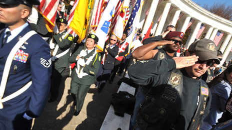

Attention A T users. To access the menus on this page please perform the following steps.
1. Please switch auto forms mode to off.
2. Hit enter to expand a main menu option (Health, Benefits, etc).
3. To enter and activate the submenu links, hit the down arrow.
You will now be able to tab or arrow up or down through the submenu options to access/activate the submenu links.

About VACI
Since 2010, VACI has worked to identify, test, and evaluate new approaches to the agency's most pressing challenges. Balancing the practical with the aspirational, VACI ensures a steady flow of high value innovations from concept to implementation, within the largest civilian cabinet agency.
VACI believes in innovation that provides a tangible value to Veterans and/or VA—not innovation for its own sake. The work of VACI is driven by a strong commitment to a Veteran-centered approach to service delivery, and dedication to data-driven decision making, design thinking, and agile development.
From empowering patients with access to their own electronic health records, to providing clinicians with time-saving and life-saving mobile technology, our innovations are measured by their ability to improve the quality of VA care and services, increase access to those services, reduce or control costs, and improve customer satisfaction.
The VA Center for Innovation is a team of innovators and doers who are constantly looking for opportunities to improve VA's products, services, and processes.
- Patrick Littlefield
- Charles R. Brown
- Jason Carley
- Michael R. Cortright
- Drew Myklegard
- Matthew G. Robinson
- Amber Schleuning
- Rhonda Scott-Johnson
- Emily Tavoulareas
Fellows
Patrick Littlefield
Acting Director, VA Center for Innovation
As Acting Director of VACI, Patrick is responsible for designing and leading the program's implementation across VA.
Patrick is a seasoned Healthcare IT entrepreneur with over 20 years experience driving growth, building strong customer relationships, bringing products to market, and developing high performance teams. Patrick is the founder and former Chairman of WaveMark, Inc., a provider of real time application services to healthcare systems across the US and Europe and to global medical device manufacturers. Prior to WaveMark, Patrick worked in a variety of technology companies developing products for distributed sales forces and in the development of game based learning simulations.
Patrick is actively engaged in healthcare policy issues. He has a strong interest in new care delivery models and the use of technology to facilitate improved care coordination outside of the traditional venues of the hospital and physician's office. Patrick served as a member of the Massachusetts State Steering Committee for MOLST (Medical Orders for Life Sustaining Treatment). Patrick received his PhD from Harvard University in 1989.
Charles R. Brown
Director, VHA Innovation Program
Chuck Brown currently serves as the Director of the Innovation Program in the Veterans Health Administration (VHA) Office of Informatics and Analytics.
Chuck began his career with VHA in 1987 as a Biomedical Engineer. In 1989, he became the Chief Bio-Med Engineer at the Philadelphia VA Medical Center and in 1991 assumed the role of Chief Information Systems. He also served as Chief Information Officer at both the Ann Arbor VA Healthcare System and Atlanta VA Medical Center. Chuck joined the Office of Health Information in 2002, serving VHA at the national level as the portfolio manager for Health Data Systems. In 2005, Chuck transitioned to VISN 8 as the Network Chief Information Officer assuming leadership of the information management program for the seven major healthcare systems in Florida and Puerto Rico.
Chuck holds a Masters of Science in Biomedical Engineering from the University of Pennsylvania and has a Masters Certificate from the George Washington University in Project Management. In addition, he has attended leadership courses in Healthcare Re-engineering at the Kennedy School of Government at Harvard University.
Jason Carley
VHA Supervisor for Program Management and Reporting
Jason Carley currently serves as the Supervisor for Program Management and Reporting within the Veterans Health Administration (VHA) Innovation Program. In this role, he serves as the project manager for the annual VHA Employee Innovation Competitions, facilitates the VHA Innovation Selection Board, and supervises a team that provides fiscal, logistic, and reporting support to the portfolios of projects within the VHA Innovation Program.
Jason began his career working as lead developer for a small web based business for over 5 years. He began work for VA in 2006 as a contractor supporting the Chief Health Informatics Office. He became a federal Management Analyst for the Health and Medical Informatics Office in 2007. Jason has a Bachelor of Science Degree in Business Information Technology – Decision Support Systems and a Masters Certification from the George Washington University in Project Management.
Michael R. Cortright
VHA Grassroots Portfolio Manager
Michael R. Cortright currently serves as the Grassroots Portfolio Manager of the Innovation Program in the Veterans Health Administration Office of Health Information. The grassroots portfolio contains all of the VACI health innovations generated by VA employees.
Michael began his career with the Veterans Health Administration in 2001 as the Chief Information Officer at the Ralph H. Johnson VA Medical Center. Michael has over twenty years of Information Technology experience in the Insurance and Health Care Industry before coming to the VA.
Michael served in the Marine Corps and Army Reserves and retired with 30 years service. A Veteran of the Gulf War, he retired as a Command Sergeant Major. Michael holds a Master of Arts Degree in Computer Resource Management from the Webster University and is a certified Project Management Professional (PMP) and Certified Information Systems Security Professional (CISSP). In addition, he is a graduate of the VA Network Executive HealthCare Leadership Institute (NEHCLI).
Drew Myklegard
Portfolio Lead: Project Transition and VA Integration
Drew Myklegard supports transitioning projects for VACI. He works with the Veterans Health and Benefits Administrations, as well as the Office of Information Technology, to gain adoption of VACI projects across the greater VA. Before joining VACI, Drew supported former VA Chief Technology Officer Peter Levin on a number of projects including the Open Source Tiger Team, Blue Button, and Project REACH Mobile App Challenge.
Drew began his career at a medical start-up focused on implementing emergency response programs and government agencies, non-profits, and large retailers. He joined the military in 2006, and deployed to Iraq a couple of years later. He holds a BS in Chemistry from the College of Idaho.
Matthew G. Robinson
Portfolio Lead: Project Evaluation and Value Assessment
Matt Robinson coordinates project and program evaluation for VACI, and leads the analysis of innovations' financial, operational, clinical, systemic, and social value. He also manages the Industry Innovation Competition, maintains VACI's presence on the web, and manages a number of innovation projects.
Before joining VA, Matt worked to develop a Job Hunters' Program for the Helping Hand of Goodwill Industries in Kansas City as an AmeriCorps Volunteer in Service to America (VISTA). He graduated with honor from the Michigan State University Honors College (BA, Political Science) and earned his Master of Public Policy from the George Washington University's Trachtenberg School.
Amber Schleuning
Deputy Director
Amber Schleuning serves as the VACI Deputy Director. She designs and builds a portfolio of public and private partners focused on doing and implementing change. VA is committed to partnering with creative, innovative, and disruptive organizations to ensure the most meaningful and effective services are available for our Veterans. These partnerships are living relationships, ever evolving to directly support VA objectives (e.g., eliminating homelessness, resolving the claims backlog, and improving mental health services) and to ensure sustainable innovation at VA. She also leads strategy design and development in order to identify opportunities for future innovation.
Amber is a third generation Veteran. As an Army Engineer stationed in Germany, she proudly led soldiers through multiple combat tours of duty to Iraq, defining, designing, and conducting counter-IED operations. After five years of service, she left active duty in 2007 and began her own transition to civilian life.
Prior to joining VACI, Amber researched post-conflict mental health at Emory University. She volunteers with many grassroots Veteran support organizations and is committed to enabling progressive and healthy transitions. Amber is a COMMIT Foundation fellow. Previously, she supported the Assistant Secretary of Defense for Special Operations and Low Intensity Conflict / Irregular Warfare Support Program, redesigning how big data is operationalized and shared. Amber holds a BS from the University of Colorado at Boulder, an MPH from Emory University, and has studied with Georgetown University's Security Studies Program.
Rhonda Scott-Johnson
Portfolio Lead: Financial Management and Operations
As the Finance & Operations Manager of VACI, Rhonda Scott-Johnson is responsible for management and oversight of all financial transactions and related operational activities associated with the planning, programming, budgeting, execution, and evaluation of the VACI budget authority allocation. Rhonda also serves as a principal staff advisor to the VACI Director, providing support on efforts relating to human resource management, office administration, governance, internal controls, and special projects.
Rhonda is a Senior Financial Manager with over ten years of experience managing multi-million dollar budgets for program offices in several Federal Government agencies. Rhonda has served over eighteen years in the government acquisition field awarding contracts, overseeing procurement policy, and serving as a certified Contracting Officer's Representative. Rhonda has extensive experience in program management and has led many mission-critical human capital program initiatives such as the Secretary's emerging VA University initiative.
Rhonda is currently at VA on a Joint Duty detail assignment from the Office of the Director of National Intelligence. During this detail, she has served as the Financial Management Lead of the Business Management Transformation Team appointed by the Acting Assistant Secretary of VA Human Resources & Administration, and as Special Assistant to the Dean, VA Learning University.
Rhonda earned a Master's in Business Administration (MBA) from Strayer University in 2005, a Master of Science in Strategic Intelligence (MSSI) ABD from National Intelligence University (formerly the Joint Military Intelligence College) in 2003, and a Bachelor of Science in Business Administration (BA) from Cheyney University of Pennsylvania. Rhonda is a native Philadelphian and currently resides in Woodbridge, Virginia.
Emily Tavoulareas
Portfolio Lead: Strategic Engagement
For nearly a decade, Emily has been working at the intersection of civic innovation, technology, and entrepreneurship. In her role as Portfolio Lead for Strategic Engagement at VACI, Emily is focused on building momentum around VACI's work, and exploring how innovation within VA can take root, grow, and bring value to Veterans' lives. She brings with her a passion for civic innovation, and background in digital and content strategy, user experience, international development, and entrepreneurship.
Prior to joining VA, Emily was Creative Strategist at iStrategyLabs, a boutique creative agency in Washington, DC that specialized in products that bridge the online and offline worlds, and led outreach and engagement for innovation competitions at Ashoka's Changemakers. She has also had a hand in a number of exciting events aimed at bringing together innovators and problem solvers, including the 2010 Global Entrepreneurship Summit, DCWeek 2012 and DC Social Media Week 2013.
Peter Almenoff
Senior Fellow
As Assistant Deputy Under Secretary for Health for Quality and Safety, Peter L. Almenoff, MD, FCCP, provides a strategic vision to support quality and safety in the VA health care system. He also directs and supervises the Quality and Safety Analytics Center, the Inpatient Evaluation Center, and the Office of Productivity, Efficiency, and Staffing, and is the National Program Director for Pulmonary and Critical Care.
Dr. Almenoff has worked for the Department of Veterans Affairs for 25 years. He served as Network Director for the VA Heartland Network from 2004 to 2008. Previously, he was Chief of Specialty Care for the Network and the Kansas City Medical Center, as well as Chief Medical Officer and Deputy Network Director. He was national editor of the VA/DoD Clinical Practice Guidelines on COPD, Asthma, and Smoking Cessation, the VA smoking cessation and sleep-related disorder guidelines, and the National VA Intensive Care Unit Study.
Dr. Almenoff is an Associate Professor of Pulmonary/Critical Care Medicine at the University of Kansas. He has published extensively in the areas of pulmonary physiology (airway tone), biochemistry, granulomatous diseases, and outcomes research. Dr. Almenoff is a Fellow of the American College of Chest Physicians, a member of the American Thoracic Society, and a Diplomat of the American Board of Internal Medicine.
Rick Avila
Entrepreneur in Residence
Rick Avila is an Entrepreneur in Residence at VACI and a Senior Advisor to VA CIO Stephen Warren on open source strategies. Rick is a leader in healthcare technology development with extensive experience developing and deploying advanced healthcare delivery solutions in both academic research and commercial settings. Throughout his career of over twenty years, he has contributed and supported a wide range of open science projects, including having:
- Contributed as a founding author to VTK, a widely adopted open source data visualization toolkit.
- Led projects and provided guidance for the National Library of Medicine's ITK segmentation and registration toolkit.
- Founded the Give a Scan project, the first people-powered, open archive of images and clinical data on lung cancer patients and those at risk for the disease.
- Served as a founding member of the Open Source Electronic Health Record Agent (originally a VACI innovation) as the Director of Open Source Operations.
Rick holds a MS Degree in Computer Science from SUNY Stony Brook, specializing in 3D biomedical imaging and visualization.
Craig Newmark
"Nerd in Residence"
Craigslist Founder Craig Newmark is a self-described nerd, as well as a pioneer of the Web, speaker, philanthropist, and a strong advocate of the use of technology for the public good. He joins the Center for Innovation as a Nerd-in-Residence to work with us in pursuing creative ways to bolster a customer service culture and capability at VA.
In 1995 Craig founded craigslist, which has become one of the world's most-visited websites with around 50 billion page views per month. In 2011 he founded craigconnects, his personal Web-based initiative to stand up for organizations "getting stuff done" in areas Craig is passionate about. These include Veterans and military families, open government, public diplomacy, back-to-basics journalism and fact-checking, consumer protection, and technology for the public good.
Douglas Trauner
Entrepreneur in Residence
Douglas Trauner is a leader in the field of mHealth having co-chaired the FCC mHealth task force. He founded Health Analytic Services, Inc. in 2007 and launched the outpatient care-coordination platform of TheCarrot.com in 2008. TheCarrot.com is an award-winning, mobile and online service that helps healthcare providers coordinate discharge planning, chronic care services and patient self-management. Its clinically validated platform offers solutions for reducing readmissions, managing post-discharge care and enhancing wellness.
Doug is a frequent speaker on the subject of patient engagement and privacy. He previously co-founded PM Squared, Inc., a health care information company providing financial and actuarial services, which was acquired by United Healthcare. Doug has an engineering degree from the University of California at San Diego.